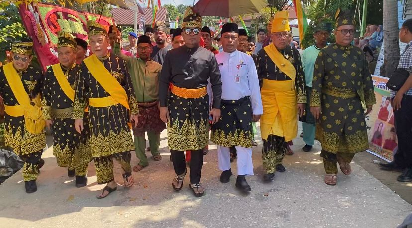
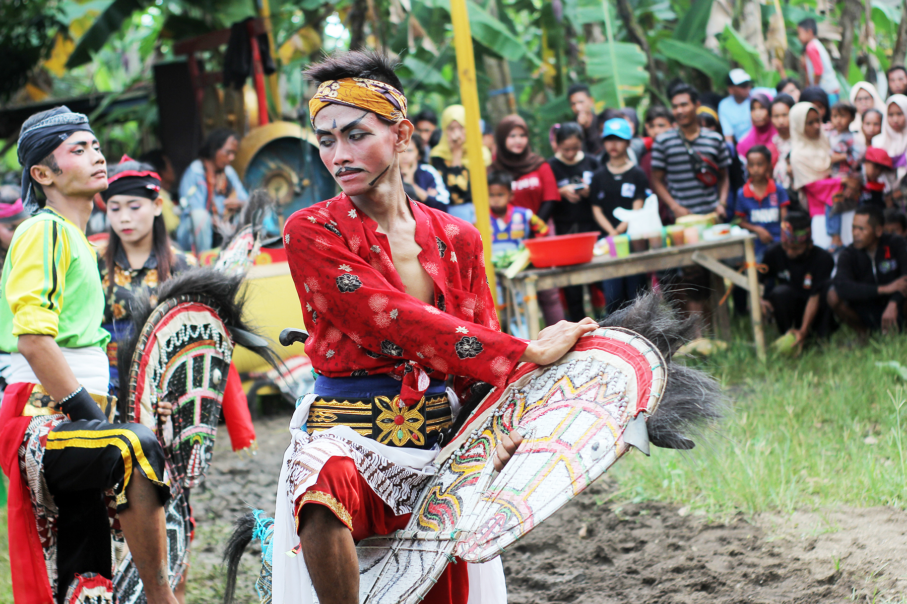

Sejarah Ukui

Sejarah Lengkap
Desa Ukui
Sebelum Kelurahan Ukui dibentuk Ukui adalah sebuah desa yang ada di Kabupaten Pelalawan yang sebelumnya juga termasuk kedalam wilayah Kabupaten Kampar, sebelum desa Ukui berstatus Desa Ukui Satu merupakan suatu wilayah perbatinan yang ada dalam wilayah kekuasaan kerajaan Pelalawan yang disebut dengan wilayah perbatinan Tuo Napuh.
Kelurahan Ukui dibentuk berdasarkan Peraturan Daerah Kabupaten Pelalawan Nomor : 08 Tahun 2004 tentang Pemekaran dan Perubahan status Desa menjadi Kelurahan di Ibu Kota Kecamatan. Pada tanggal 22 November 2005 Desa Ukui I di Resmikan oleh Bupati Pelalawan menjadi Kelurahan Ukui.
Kondisi masyarakat Kelurahan Ukui sangat heterogen yang hampir seluruh suku bangsa yang ada di Negara Republik Indonesia ini berada di Kelurahan Ukui ini, dengan beranekaragam pemeluk agama, suku, budaya dan adat istiadat.
Tidak ada catatan resmi yang menyebutkan tanggal pasti kapan gamelan Kuda Lumping pertama kali ditabuh di Kelurahan Ukui. Namun, berdasarkan cerita turun-temurun dari para sesepuh dan tokoh masyarakat, kesenian ini dibawa bersamaan dengan gelombang kedatangan para perantau dan transmigran asal Pulau Jawa (khususnya Jawa Tengah dan Jawa Timur) ke wilayah Kabupaten Pelalawan.
Ketika masyarakat perantau ini tiba di wilayah perbatinan Tuo Napuh (yang kelak menjadi Kelurahan Ukui), mereka tidak hanya membawa bekal fisik untuk bertahan hidup, tetapi juga membawa "ruh" kebudayaan leluhur mereka. Di tengah kerasnya perjuangan membuka lahan, bekerja di perkebunan, dan membangun kehidupan baru di dataran rendah Ukui, kesenian menjadi oase bagi kelelahan mereka.
Dari "Tombo Kangen" Menjadi Simbol Persaudaraan
Pada masa-masa awal, pertunjukan Kuda Lumping (atau sering juga disebut Jaranan / Jathilan) dimainkan secara sederhana. Kesenian ini pada awalnya adalah tombo kangen atau obat rindu terhadap kampung halaman. Setelah lelah bekerja, para perantau Jawa akan berkumpul di halaman rumah salah satu warga, menabuh kendang, kenong, dan gong seadanya.
Kuda Lumping pada masa itu berfungsi sebagai alat pemersatu (paguyuban). Melalui latihan dan pertunjukan sederhana, tali silaturahmi antar warga perantauan semakin erat. Mereka bergotong-royong membuat anyaman kuda dari bambu (jaran kepang) dan topeng-topeng sederhana. Di sinilah nilai-nilai filosofis Jawa tentang kegotongroyongan dan kerukunan diajarkan kepada generasi muda yang lahir di tanah Riau.
Pakem Pertunjukan dan Makna Spiritual
Sama seperti di daerah asalnya, Kuda Lumping di Ukui tidak hanya sekadar tarian fisik, melainkan memiliki nilai spiritual. Tarian ini melambangkan semangat heroisme dan kegagahan prajurit berkuda (pasukan kavaleri).
Dalam setiap pertunjukannya, kesenian ini dipimpin oleh seorang Bopo atau Pawang (tokoh sesepuh yang dituakan). Pertunjukan biasanya diawali dengan pembakaran kemenyan dan doa-doa untuk memohon keselamatan kepada Tuhan Yang Maha Esa agar acara berjalan lancar dan seluruh penonton maupun pemain dijauhkan dari marabahaya.
Adegan-adegan seperti kesurupan (trance) atau atraksi kebal (makan beling/mengupas kelapa dengan gigi) yang sering muncul dalam puncak acara, dimaknai sebagai gambaran bahwa manusia memiliki kekuatan gaib yang dianugerahkan Tuhan ketika mereka berserah diri. Namun, seiring berjalannya waktu dan penyesuaian dengan nilai-nilai religius mayoritas masyarakat di Ukui, elemen-elemen ekstrem ini mulai disesuaikan menjadi lebih berfokus pada keindahan koreografi tari dan hiburan semata.

Kuda Lumping
Hingga saat ini, kesenian Kuda Lumping di Kelurahan Ukui dikelola dengan baik oleh berbagai paguyuban seni atau kelompok kebudayaan desa. Kesenian ini selalu hadir dan menjadi tontonan yang ditunggu-tunggu dalam berbagai perayaan penting, seperti:
1. Peringatan Hari Ulang Tahun (HUT) Kemerdekaan RI.
2. Peringatan HUT Kelurahan Ukui.
3. Acara hajatan warga seperti pernikahan atau khitanan.
4. Acara Bersih Desa atau syukuran panen.